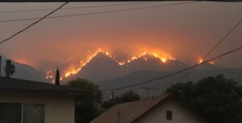

As I argued in a recent article, the election of Donald Trump as President would be disastrous for climate change compared with the current Democrat administration of President Biden. The situation is quite different in Australia. The election of a Coalition government federally next year, even under Peter Dutton, would not be all that much worse than the situation under the current Labor administration of Anthony Albanese.

Fire near Los AngelesBoth major parties have the same 2050 greenhouse gas emissions reduction target. The Coalition refuses to set an interim 2030 target, but in practical terms that makes little or no difference. Snowy 2.0 and the Marinus Link (which will bring hydro-generated power from Tasmania to the mainland are both lock in (see my previous article), and the major power generators have pledged to eliminate coal-fired power stations by 2038. Moreover they can be trusted to do so because those power stations will have reached the end of their useful lives by then.
Of course, in some cases they will replace them with gas peaking plants which have lower greenhouse gas emissions (but still emit significant amounts). Preferably we would see the federal government introducing a carbon tax or similar method of ensuring that closed coal power stations are replaced by facilities that don't emit any greenhouse gases at all. However, neither Labor nor the Coalition have any intention of introducing a carbon tax. Thus, as I say, there is little or no practical difference between the two major parties.
Even on nuclear power, I suspect there is no real difference. Dutton has made much of the nuclear option, but his party has pledged to conduct an 18 month public consultation process if they achieve government. I suspect that they will quietly drop the nuclear proposal after that. Any party that wants to stay in government needs to maintain a fiscal strategy that keeps the Budget roughly in balance, and the huge cost of building nuclear power stations within ten years (or at all) would make maintaining a balanced Budget almost impossible.
The bottom line is that a future federal government of either party will make little or no practical difference on climate change. Both parties have fairly sensible, moderate policies on climate change (in contrast to the US). Of course, neither party will say that nor will the media. "Things are more or less ok and there isn't much difference between the parties" isn't really news, even though it happens to be true.
I agree with your overall thesis, Ken, the policy positions of the two major parties on climate issues are scarcely better or worse than each other. But both are weak, totally inadequate in the face of the climatic instability that is no longer future, but is here now, and worsening.
the two parties are similar? huh
If the LNP are fair dinkum and I suspect they are not it would mean energy from both coal and gas until nuclear came on.
One of things which would occur is a lot more unit breakdowns ( which is already very high) from old coal fired power stations.
If they are saying falsely that ALP wants 100% renewables and Littleproud is explicitly saying he would limit further renewables then there is a real difference.
We are only talking energy. how about transport. They have said they would walk back the new fuel efficiency standards.
The energy providers are pledged to close all coal stations by 2038, irrespective of what either major party says. We can trust what they say because those power stations will have reached the end of their useful lives by 2038.
so you have not read what the LNP are saying.